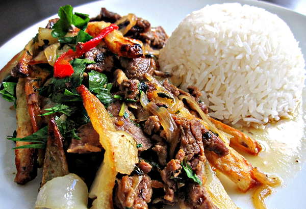
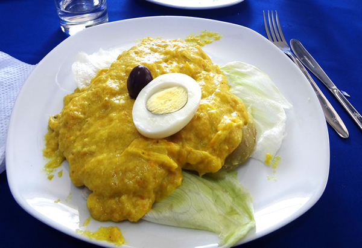
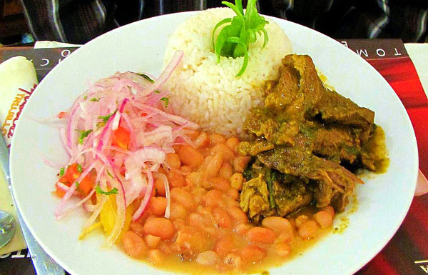

Descriptions of the Famous Dishes of Chiclayo:
| Lomo Saltado |
| This delicious dish consists of marinated beef stir-fried with red onions, parsley, and occasionally tomatoes. Usually served with white rice and potato fries, this recipe is a classic Peruvian dish with Chinese influence, and a favorite of many. |

| Arroz con Pato |
| Ask any Chiclayano what the typical foods of the area are, and one that is sure to be mentioned is Arroz con Pato. Originating from Spanish Paella, this dish consists of rice and duck, cooked with Spanish spices, chili, and chicha. |
| Cuy (Guinea Pig): |
| A classic Peruvian dish, cuy is most often cooked in the Andes, but is a fun adventure anywhere in Peru for those who wish to try something different. Most often fried, cuy is usually served with the head and legs still attached, along with rice and potatoes. |
| Aji de Gallina: |
| Another classic Peruvian meal, Aji de Gallina (pronounced Ahi Day Guy-ina) consists of a yellow sauce with chicken served over rice and topped with egg and the typical Peruvian olive (Aceituna). |

| Pollo a la Brasa |
| Originally from Lima, Pollo a la Brasa is chicken that is either grilled or baked in a coal oven and seasoned with a variety of Peruvian spices. The chicken is typically served with a pile of fries and the option of mayonnaise, ketchup, and a few Peruvian sauces to dip fries in. |
| Alpaca: |
| In Peru, there is a variety of dishes served with Alpaca meat. This meat is quite tasty, and is leaner, less greasy, and gamier than beef. |
| El Seco De Cabrito: |
| This entree is ooked using goat seasoned with garlic, mirasol pepper, and other spices combined to make a sauce. It’s most often served with yucca, rice, and/or beans. |

| Chupe de Camarones (Shrimp Cioppino) |
| This shrimp chowder contains crayfish, potatoes, chili powder, and milk. It tastes a bit like it is from Thai descent, and is very common along the Peruvian coast. |